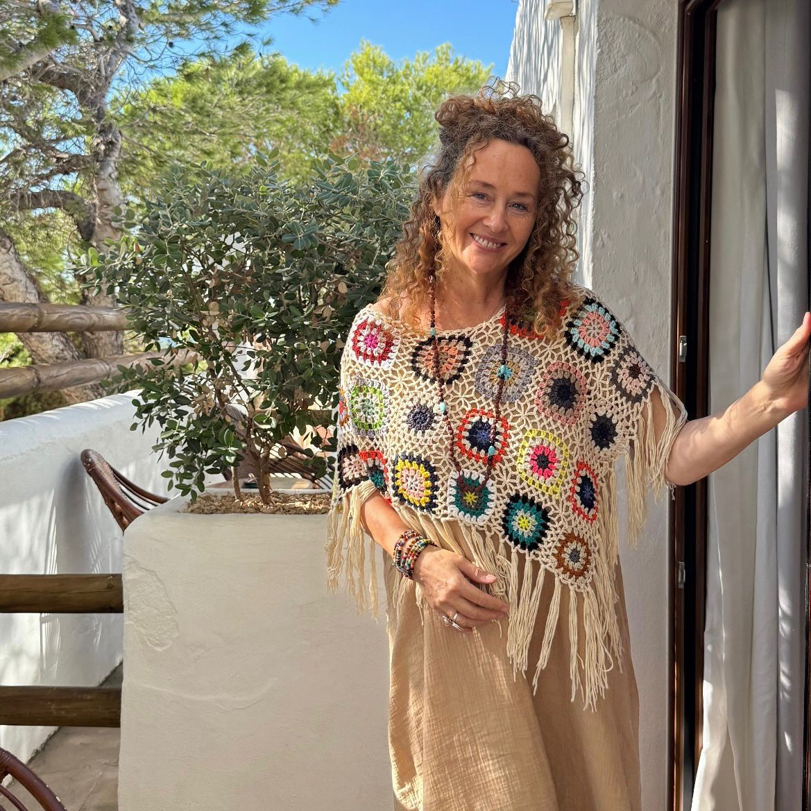
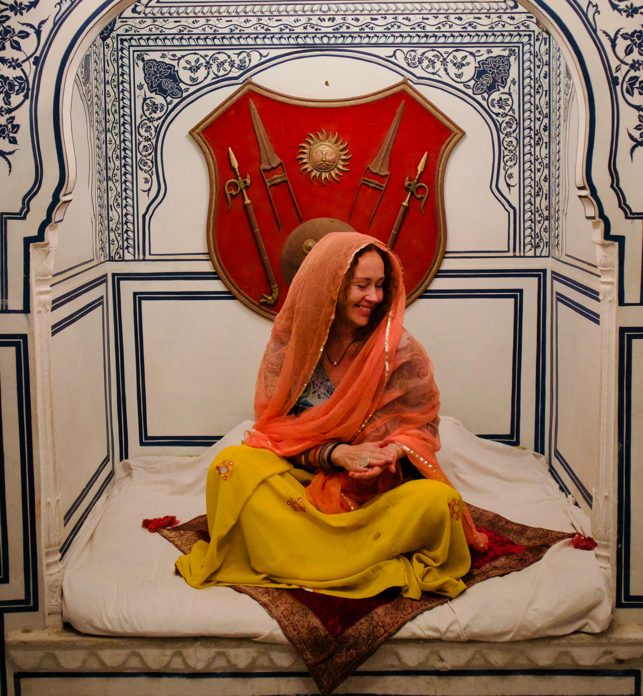
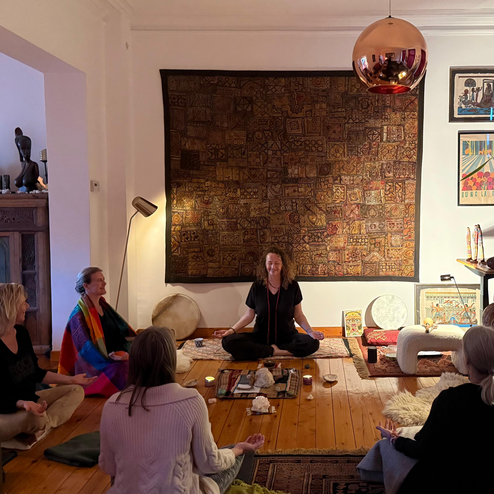

Inner peace
for world
peace
I bridge the world of sustainability with the wisdom of the soul. My aim is to share energetic and elemental knowledge to elevate and uplift. We are in conscious movement together, building a better world.

Bridging Global Systems and Ancient Wisdom
30 Years Leading Transformation
Navigating the corridors of power, advocating for climate, nature and healthy food systems.

IIA Decade-Long Soul Journey
Seeking ancient wisdom and somatic practices in sacred sites across India, Peru, Mexico, Egypt, China and Japan.

IIINow: Guiding Your Transformation
Creating space to ground your deepest wisdom and lead with clarity.
If you've achieved so much yet feel something essential calling you inward, this work is for you
Leaders in Transition
You've led teams, organisations or movements. Now you're ready to lead from a deeper place.
Dreamers Seeking Vitality
You've given everything to your mission. Now it's time to reclaim your energy and rediscover joy.
Women in Evolution
You've created and contributed. Now something essential is calling you to shift towards a more meaningful future.
An Integrated Approach
Shamanic Kundalini Yoga, Breathwork & Meditation
For energy activation, somatic release and nervous system regulation
Conscious Leadership & Transformation Strategies
Grounded in positive psychology to guide you through deep shifts
Ceremony & Energy Healing
Sacred practices for deep healing and spiritual connection

To strengthen the pathways that will carry us through.
Turn up the volume on your own frequency.
Move through the chakras. Clear the static.
Breathe, shake, soften, laugh, rest and recalibrate.
Frequently Asked Questions
Shamanic kundalini yoga blends ancient kundalini practices with shamanic wisdom. It combines breathwork, movement, meditation and energy work to activate your life force, release what no longer serves and reconnect you to your deepest self. Unlike traditional kundalini yoga, shamanic kundalini integrates ceremony, sound healing and elemental practices.
Shamanic kundalini yoga is a combination of breath, movement and rest:
• BREATH to regulate the nervous system
• MOVEMENT so the body remembers
• REST to integrate
Shamanic kundalini yoga helps you:
• Rewire the nervous system
• Strengthen neural pathways of resilience
• Help the body learn how to find safety again
This is powerful, embodied soul work. If your soul is craving warmth, rhythm, truth, if your body needs a full-body release and reset, if your mind is craving clarity, this practice is for you.
We take a journey within to a place of remembering and peacefulness, where calm, clarity and courage become embodied in a new lightness of being.
We relearn ancient wisdom for the modern era:
• Rising power of kundalini energy
• Alchemy of breath, frequency and embodiment
• Deep roots of ethics and integrity
• Anchoring within the medicine wheel
• Shamanism as a living reality
People feel misaligned with the state of the world, overwhelmed or overstimulated, and need a safe space to just be.
Shamanic kundalini yoga and breathwork offer soul rest, a chance to regulate, remember, and recalibrate. This practice strengthens the pathways that will carry us through.
Our teaching methodology is built on three pillars which together deliver an integrated framework for safe evolution.
Elemental: nature is a part of every practice, helping to nourish and ground the nervous system, and strengthen resilience.
Energetic: the practice awakens the life force, the chi or prana, through devoted breathwork and conscious movement.
Elevating: your spirits are lifted and good vibrations uplift you to new levels of clarity and personal power.
The best way to know is through a free discovery call. We'll explore where you are, what's calling you inward and which approach feels most aligned. Some people know immediately they want a retreat immersion, whilst others prefer to begin with 1:1 mentorship or join a moon circle first. Trust your instinct.
Absolutely. All practices are adapted to meet you where you are. Whether you're new to embodied practices or experienced in yoga and meditation, I create space for your unique journey. If you are ready to journey within, you are ready for shamanic kundalini yoga.
The seven archetypes — Activist, Organiser, Expert, Campaigner, Storyteller, Guide and Leader — represent different ways we create change in the world. Each is connected to a chakra energy centre. Understanding your dominant archetype helps you lead from your natural strengths rather than forcing yourself into moulds that don't fit. You can discover your archetype in The Feminine Shift.
Yes. Feminine strengths — empathy, collaboration, emotional intelligence, systems thinking — are essential for all humans. These are essential skills, learnable and necessary to bring balance to ourselves and to the world.
Both. I offer remote sessions via video link for leadership coaching, 1:1 mentorship, breathwork journeys and shamanic kundalini yoga. Moon circles, sacred ceremonies and kundalini classes take place in Brussels. Retreats are in-person immersive experiences in Ibiza and other sacred sites in Europe.
Join our mailing list by clicking "Connect with Consciencia" anywhere on this site. You'll receive updates about retreat dates, moon ceremonies, online circles and insights from The Feminine Shift journey, plus access to free resources.
If you're navigating transition, seeking deeper meaning, outgrowing old patterns or feeling called to something more, this work is for you. You don't need a title or decades of achievement. You just need to be ready to remember who you are beneath all the doing.
Join The Feminine Shift
Be the first to receive news on Joanna's book, published 22 April 2026, and learn about upcoming Feminine Shift events
"Joanna, you are truly gifted. Your voice, the ways in which you combine the spiritual and physical, the atmosphere you create, ALL of it is just magical."
Sandra
"Thank you, my daughter and I felt safe and guided on a journey of connection."
Lena
"Felt absolutely amazing, during and after the session! Totally deep relaxed but regenerated!"
Sabine